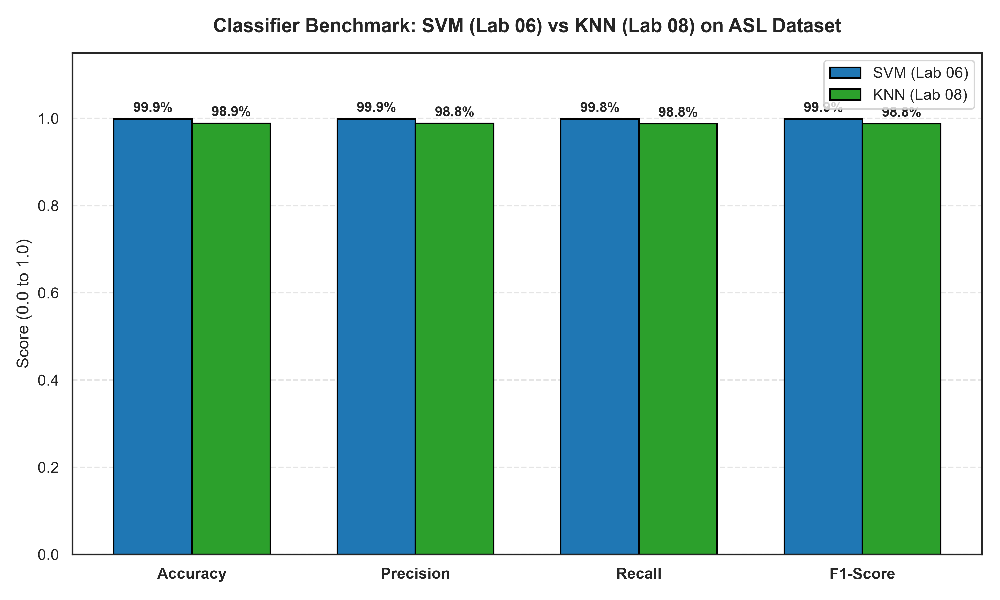
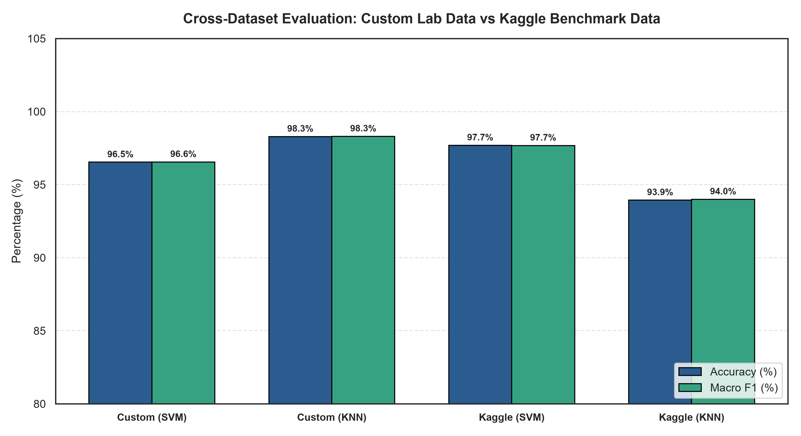
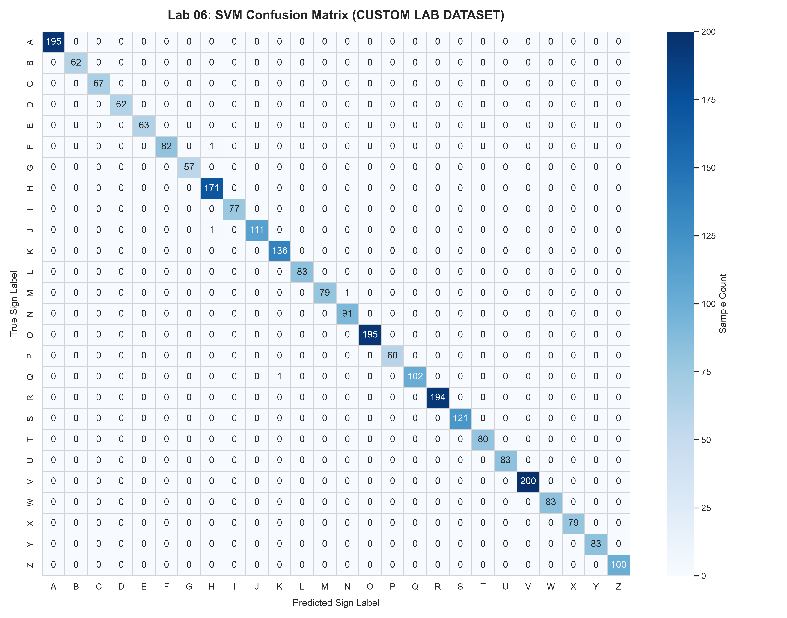
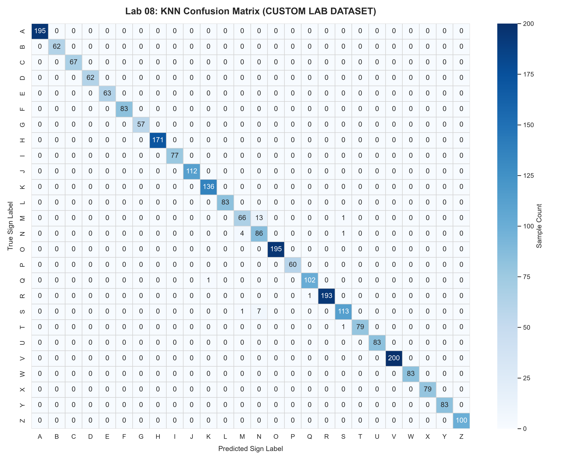
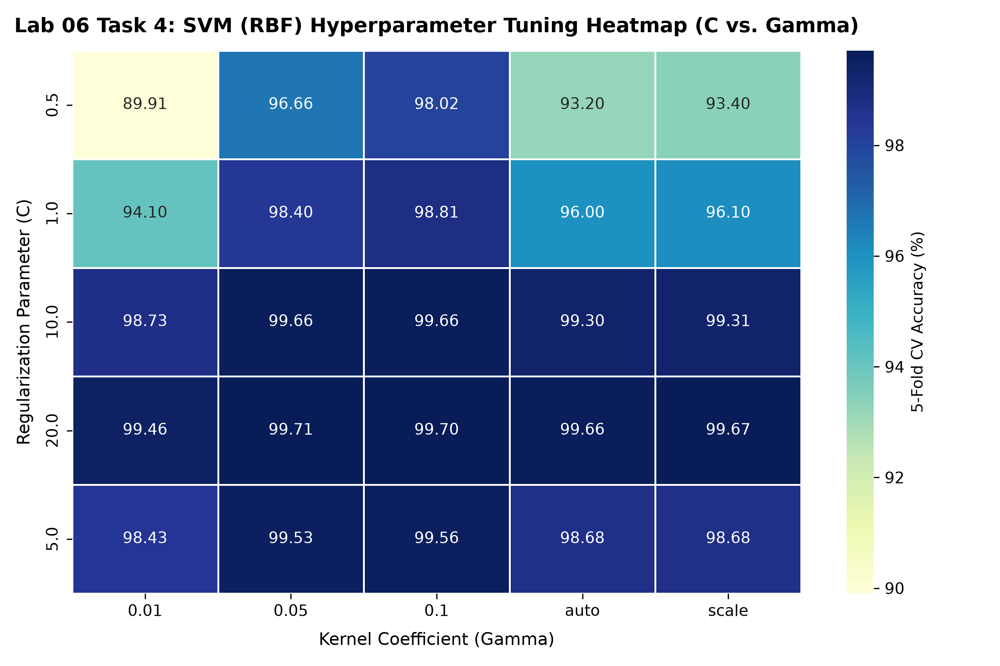
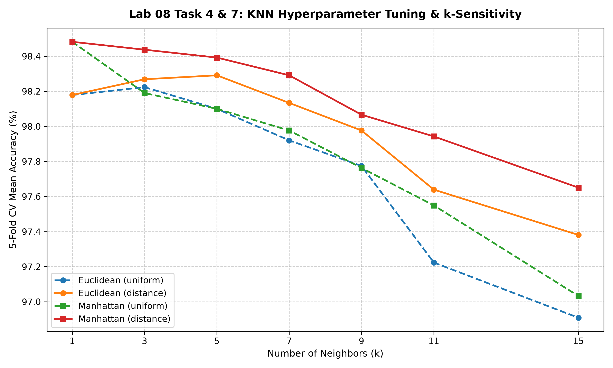
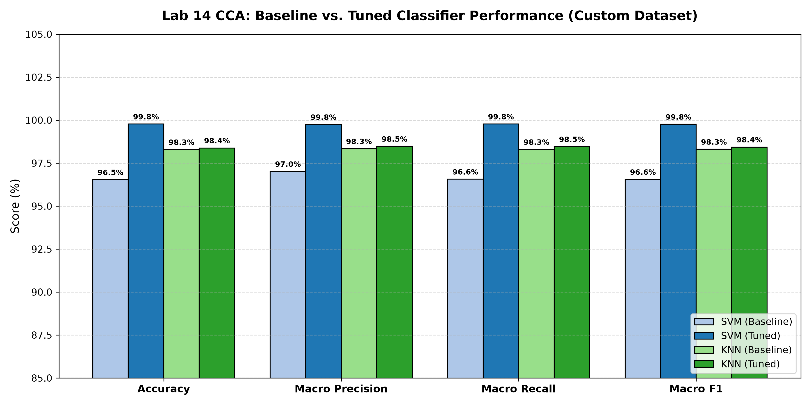
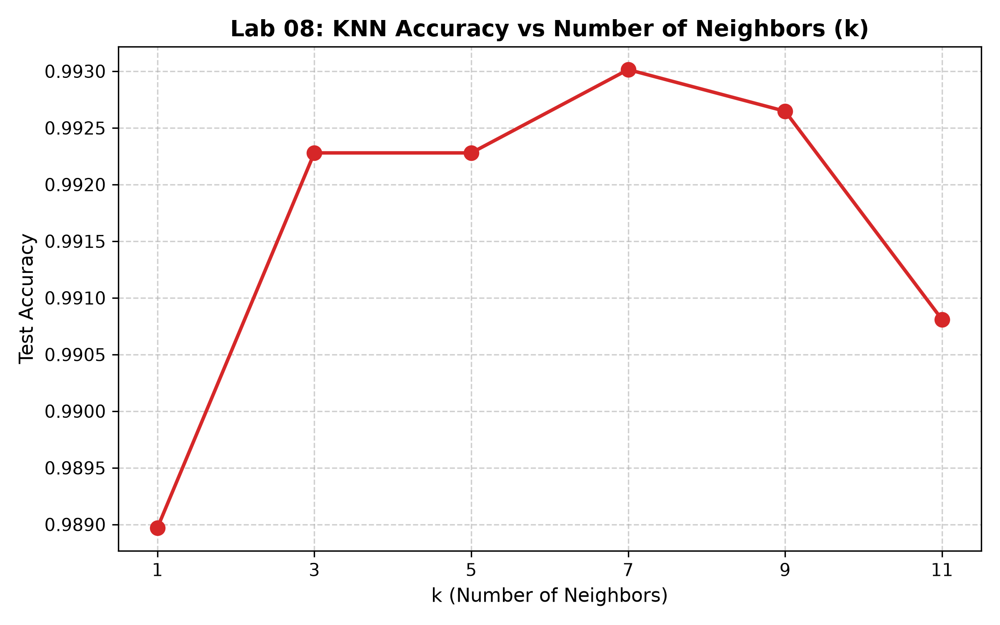

Both classifiers were trained on 9,237 standardized 63-D hand landmark vectors and evaluated on 2,310 unseen test samples (stratified 80/20 split).
| Evaluation Metric | SVM (Lab 06 — Tuned RBF) | KNN (Lab 08 — Tuned Manhattan) |
|---|---|---|
| Test Accuracy | 99.70% | 98.96% |
| Macro Precision | 99.72% | 99.01% |
| Macro Recall | 99.69% | 98.97% |
| Macro F1-Score | 99.70% | 98.98% |
| Weighted F1-Score | 99.70% | 98.96% |
| Avg Inference Time | 0.212 ms / sample | 0.143 ms / sample |


Per-letter classification breakdown across all 26 American Sign Language alphabet gestures.


Systematic hyperparameter search across SVM kernels/C/gamma and KNN neighbors/metrics/weights.



